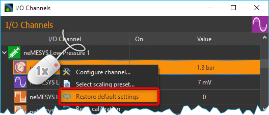
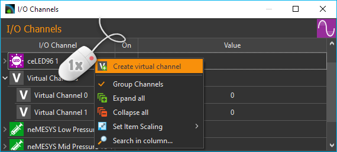

I/O Plugin
I/O Plugin Overview
The I/O plugin is used to integrate various CETONI I/O modules into the CETONI Elements software and for displaying I/O channels of other devices like Nemaxys positioning systems or Nemesys syringe pumps.

List of I/O channels
All available I/O channels are shown in the I/O channels view. You can distinguish the different types of I/Os (AI: analogue input, AO: analogue output, DI: digital input, DO: digital output, Pressure: pressure sensor) by their symbols and names (see figure above). If the I/O list is not visible, you can display the window via the main menu of the application .

The following columns are present:
I/O Channel - contains the name of the I/O channel and displays a symbol for the channel type.
On – a lit green LED indicates that a channel is switched on and that a digital channel is 1 (instead of 0), respectively.
Actual Value - Shows the current value of the channel - in the case of output channels, this is the value that is output, and in the case of input channels the value read from the device.
Channel types
The following types of channel are currently supported:
|
analog inputs (voltage and current) |
analog outputs |
|
|
digital inputs |
|
digital outputs |
|
analog pressure sensor inputs |
|
analog temperature sensor inputs |
analog force sensor |
|
|
analog flow sensor |
|
virtual channels |

{kind=link}
{kind=link}
Grouped display
By default, the I/O channels are displayed in groups. This means that the channels of a certain device are grouped under the device name, so that a tree-like structure is created. I.e., you can show or hide the display of channels for certain devices, e.g. for the Nemesys pumps. In the following figure, for example, only the channels of the first Nemesys pump are displayed.
Important
If you are still working with an older device configuration, you may have to save the device configuration in the Device Configurator again so that the I/O channels are displayed in groups.

All I/O channels that do not belong to a specific device or channels of devices that do not yet support grouping are grouped together in the Ungrouped Channels group.

You can activate and deactivate the grouping of channels at any time. Simply right-click in the list of I/O channels and select Group Channels from the context menu (figure below).

If the channel grouping is deactivated, you get a flat display of the I/O channels in list form.

Search I/O channels
If you want to quickly search for a specific channel in the list, right-click in the first column (I/O Channel) and select Search in column from the context menu.

A search dialog is displayed in which you can enter the search term. A list of possible hits is displayed as you enter the search term. If you select an entry, the corresponding channel is displayed in the I/O list and is highlighted in color.
Change Item Scaling
In order to increase clarity or improve readability, the display of the list entries can be switched between three sizes. To do this, choose Set Item Scaling from the context menu and then select the required size:
Set outputs
The values of output channels can be changed by the user. Output channels include digital and analog output channels as well as virtual channels. Digital output channels can be switched on and off by clicking on the LED in the On column of the channel.

Analog channels can also be switched on and off by clicking on the LED. If an analog channel is switched off, the value 0 is output. If an analog channel is switched on, the value from the Value column is output. If you want to change the analog value, simply double-click with the left mouse button in the value column of a channel, or select the value column of the channel and then start typing on the keyboard.

This also allows you to change the values of virtual channels.
I/O Channel Configuration
Changing channel captions
You can change the caption of each channel at any time, for example, to assign a memorable name suitable for your particular application. You may change a caption by the following steps:
Double-click the name you want to change.
The name is now highlighted in yellow: Enter the new name (figure below).
Complete your entry by pressing the Return key.
Activating the Configuration Dialog
In addition to customizing the name, for most I/O channels there are additional parameters that may be configured, such as the scaling of analog in- and outputs. You will find these configuration parameters in the respective configuration dialog of each channel.

To open the configuration panel, right-click on the respective channel name from the I/O channel list and select the context menu item Configure channel (figure above).
Configuration Dialog
In the configuration dialog you can configure all accessible parameters of an analog in- and output channel:

The title bar shows the name of the channel you are configuring.
In the toolbar you can find the actions you can perform:

Restore default settings By clicking this button, all parameters (channel name, decimal points, scaling, etc.) are reset to their original values.
Select Scaling Preset - opens a selection dialog with predefined Scaling Presets.
Reset Calibration- resets the calibration of the channel to the default settings (offset = 0, factor = 1).
Here you can configure the general settings of the channel, such as name, decimal places or unit of measurement:
Caption – Here you can set a new name for that channel, which is then displayed in the channel list.
Measuring Unit– Enter the measurement unit in which the measured values are displayed. The unit must be compatible with the basic unit of the channel or sensor. For example, you can use the units bar, psi, or Pa for a pressure measurement channel, but not the units mV, mA or kg. The software automatically converts the measured values of the sensor into the selected unit.
Decimals – This field is to set the number of decimal points of the scaled unit of measurement.
In the Calibration area, you can compensate measurement value deviations of channels by means of calibration.
For channels that support the connection of sensors (for example, voltage or current measuring inputs), you can display the operating elements for configuring the scaling of the sensor. To do this, click Sensor / Actuator Configuration.
{kind=link}
{kind=link}
Tip
All changes will be activated only after being accepted by pressing OK. To cancel all changes use Cancel.
Important
Clicking Restore default settings will instantly reset all parameters to their original setting – clicking OK is not required.
Calibration
With the two-point calibration you can correct measurement deviations of a channel. To do this, you record the measured value of the channel at two points ❶ and ❷ Value and enter the actual corrected value of the channel for these points Calibrated value. The software calculates the slope (factor) and the offset of the scaling.
If you click on the Capture current channel value ❸ button, the current value of the channel is automatically entered into the Value field.

Important
All calibration values are entered in the configured unit of measurement. If you change the unit of measurement or the scaling of the channel, you must check the calibration and adjust it if necessary.
Configure Sensor Scaling
Sensor Scaling Overview
For analogue channels that support the connection of sensors (such as voltage or current measurement inputs), you can configure sensor-specific scaling. This allows you to connect sensors to the analog inputs and then scale the measured values to the value range of the analog sensors and display them in the correct unit. To do this, click on Scaling Configuration in the configuration dialog.

Select Physical Quantity
In the Physical Quantity pane ❶, select the physical quantity to be measured with the sensor. If the desired sensor type is not supported in the Type selection box, simply select the Custom type for a user-specific scaling. For a pressure sensor you simply select the Pressure type.
In the Unit input field, enter the basic unit of the sensor. When selecting a sensor type, a corresponding unit is already suggested to you. The unit must be compatible with the selected physical quantity (e.g., bar, psi, Pa or atm for pressure sensors).
Two-Point Scaling
The two-point scaling ❷ is used to configure the conversion between the analog measured values of the I/O channel (for example in mV or mA) and the sensor readings of the sensor connected thereto (for example, bar or ° C). Normally you will find these values in the data sheet of the sensor.
Important
Currently, the software only supports linear scaling of measurement values.
For example, if you have a pressure sensor with an analog input range from 0.5 V to 4.5 V and a measurement range from 0 bar to 20 bar, you can enter the following parameters. Enter the I/O channel range 500 mV and 4500 mV in the first column (Device value) and the sensor range 0 and 20 bar in the second column (Scaled value).
Important
Make sure that the units used correspond to the units in the data sheet of the sensor.
Limits
In the Limits ❸ pane you define the measuring range of the sensor. In many cases, this range matches the range that you entered in two-point scaling pane. Therefore, the values for the two-point scaling are automatically transferred to the range limits. Here, you can further restrict or change the value range.
Important
Clicking Restore default settings will instantly reset all parameters to their original setting – clicking OK is not required.
User-specific Scaling
If you are using a sensor which is not yet supported in the Type selection box, simply select the sensor type Custom ❶. In this case, the input field measuring unit ❷ is grayed out, since automatic unit conversion is no longer possible.

Scaling presets
Some analog input and output channels offer a choice of predefined configurations. These include pressure sensor configurations for the analog inputs of Nemesys syringe pump devices.
Important
Predefined configurations are not offered by all analog channels. For those channels the menu item Select scaling preset is not displayed in the context menu.

To select a predefined configuration proceed as follows, right-click the respective analog channel in order to show the context menu (see figure below). Choose Select scaling preset. A dialog containing a selection of scaling presets appears (figure below). Select the preset you are going to use and confirm your choice by left-clicking Ok.

To restore the default channel settings, simply click the menu item Restore default settings in the channel context menu (see figure below).
Virtual Channels
Creating virtual channels
The software allows the creation of virtual I/O channels. These channels are not assigned to a physical I/O device, but they are a kind of memory. You can write values into virtual channels and read them out later - just like a memory. Using these channels, you can, for example, show calculated values from a script in the graphical logger. You only have to create the channel, add the channel to the logger, and then you can write values from the script into the channel and you will see them in the graphical logger.
To create a virtual channel, click with the right mouse button in the I/O channel list and select the context menu item Create virtual channel.

A virtual channel will then be added and you can configure the channel further - e.g. change the channel name. If channel grouping is active, all virtual channels are grouped together in the Virtual Channels group and inserted there when they are created.

If channel grouping is disabled, the newly created virtual channel is inserted at the end of the list.
Access to virtual channels from a script program
To access virtual channels out of script programs (read and write access), you can use the script functions from the category Device Functions (figure below).

Deleting virtual channels
To delete a virtual channel, click with the right mouse button on the channel in the I/O channel list, and then select from the context menu the item Delete virtual channel (figure below).

I/O Script Functions
Introduction to I/O Script Functions
The I/O plugin contains script functions for switching digital outputs and setting the values of analogue outputs.

Set Digital Out
{kind=link}
You use this function to set/delete a digital output from a script. Select the digital channel in the configuration area of the function and then set the desired output value.
Set Analog Out

With this function, you can write a value from a script to an analogue output channel. Select the analogue channel in the configuration area, and then configure the analogue initial value that is to be set during the subsequent execution of the function.
This function supports the use of variables. This means that, instead of a numeric value, you can insert a name of a variable into the field Value. This variable will then be set to the analog output value when the script is run (figure below). This variable may then subsequently be used for calculations or to carry out value-specific functions.

Supported Beckhoff I/O Terminals
The I/O plugin supports the modular CETONI QmixIO-B module.

The following list shows all Beckhoff bus terminals that are supported by the software:
Digital Input Terminals

The software should work with all KL1xxx digital input terminals. The following terminals have already been tested with the I/O plugin.
Terminal ID |
Description |
|---|---|
4 channel digital input 24 V DC, 3 ms, 2-/3-wire connection |
|
4 channel digital input 5 V DC |
|
4 channel digital input 24 V DC |
|
8 channel digital input 24 V DC |
|
16 channel digital input 24 V DC, 3 ms, flat-ribbon cable connection |
Digital Output Terminals

The software should work with all KL2xxx digital output terminals. The following terminals have already been tested with the I/O plugin.
Terminal ID |
Description |
|---|---|
2 channel digital output, 24 V DC, 0.5 A |
|
2 channel digital output, 24 V DC, 2 A |
|
4 channel digital output, 24 VDC |
|
4 channel digital output, 5 V DC |
|
4 channel digital output, 24 V DC, 0.5 A, 2-wire connection |
|
8 channel digital output, 24 V DC, 0.5 A, 2-wire connection |
|
2 channel digital output, 24 V DC, 2 x 4 A/1 x 8 A |
|
2 channel relay output, 125 V AC/30 V DC |
|
4 channel relay output, 250 V AC/30 V DC |
|
8 channel digital output, 24V, 0.5 A |
|
16 channel digital output, 24V, 0.5 A, flat-ribbon cable |
Analog Input Terminals

The following analog input terminals are supported by the I/O plugin:
Terminal ID |
Description |
|---|---|
1 channel analog input 4..20mA - 0,3% 12Bit |
|
2-channel analog input 4…20 mA, 12 bit, differential |
|
4 channel analog input 4..20mA - 12 bit, single ended |
|
2 channel analog input -10V..+10V |
|
2 channel analog input 4..20mA - 0.05% 16 Bit |
|
2 channel analog input 0..10V - 0.05% 16 Bit |
|
1 channel PT100 RTD |
|
2 channel PT100 RTD |
|
4 channel PT100 RTD |
|
4 channel PT100 RTD 3-wire connection |
|
2 channel PT100 RTD, high-precision |
|
2 channel thermocouple input |
|
4 channel thermocouple input |
|
4 channel analog input -10V..+10V, 12 bit, single-ended |
|
8 channel analog input -10V..+10V, 12 bit, single-ended |
|
4 channel analog input 0..20mA, 12 bit, single-ended |
|
4 channel analog input 4..20mA, 12 bit, single-ended |
|
4 channel analog input 0..10V, 12 bit, single-ended |
|
8 channel analog input 0..10V, 12 bit, single-ended |
Analog Output Terminals
The following analog output terminals are supported by the I/O plugin:
Terminal ID |
Description |
|---|---|
2 channel analog output 0..10, 12 bit, differential |
|
4 channel analog output 0..10, 12 bit, differential |
|
2 channel analog output 4..20mA, 12 bit, single-ended |
|
2 channel analog output 0..20mA, 16 bit, single-ended |
|
2 channel analog output -10..10V, 16 bit, differential |
|
4 channel analog output 0..10V, 12 bit, single-ended |
|
8 channel analog output 0..10V, 12 bit, single-ended |
|
4 channel analog output 0..20mA, 12 bit, single-ended |
|
4 channel analog output 4..20mA, 12 bit, single-ended |
|
4 channel analog output -10V..+10V, 12 bit, single-ended |
Special Terminals

The following special terminals are supported by the I/O plugin:
Terminal ID |
Description |
|---|---|
1-channel digital input, counter, 24 V DC, 100 kHz |
|
1-channel analog input, measuring bridge, full bridge, 16 bit |
Configuring Beckhoff terminals
Introduction to the Terminal Configuration
The I/O terminals from Beckhoff can be parameterized and configured via their terminal registers. The individual terminals are configured, parameterized and tested by CETONI before delivery. However, it may be necessary to adjust the terminal configuration subsequently - e.g. to select a different sensor type, to change the scaling or to activate / deactivate automatic calibration.
To configure the terminals, you can use the Beckhoff Devices view. You can display the view via the main menu with the menu item .
Configuration Interface
The configuration interface allows you to access the parameters of individual terminals. If you have several QmixIO-B or Beckhoff modules, first select the device containing the terminal to be configured in the Device ❶ selection box.

Now you can select the terminal that you want to parameterize in the Terminal ❸ selection box. The order of the terminals in the selection box corresponds to the order of the terminals on the device from left to right starting with the bus coupler.
In the Register section ❹, select the terminal channel Table / Channel and the terminal Register. For multi-channel terminals, e.g. 4-channel analog input terminals, you can configure each channel separately. If an XML description file is stored for the selected terminal, you can also select the register via a selection field with the register names ❺. If no XML description file is available, you must find the register number from the Beckhoff PDF documentation.
Via the two buttons Read ❻ and Write ❼ you can now read and write data from the selected register. Information on the meaning of the data can be found in the PDF documentation from Beckhoff.
Attention
Changing parameters can lead to the terminal no longer functioning as tested and configured by CETONI. Before changing a parameter, you should note the current value in order to be able to restore it later.
Most terminals have a Feature Register per channel for setting certain configuration parameters. This register is usually register R32. If an XML description file is stored for the selected terminal, you will see a graphical interface in the Feature Register area ❽ for accessing the individual parameters of the register. If no XML description file is available, you must select the register by its number in the Register area ❹ and then read or write the complete value. Details about the feature register are available in the Beckhoff PDF documentation.
Create an XML Terminal Description
If an XML description file has not yet been provided for a particular terminal, you can use the PDF documentation for a terminal to create an XML file yourself and add it to the software using the Add Terminal XML button:

An XML terminal description can contain multiple terminals. The following file shows the terminal description for the terminals that are already stored in the software. You can use this as a template for creating your own XML terminal description file:
<?xml version="1.0" encoding="utf-8"?>
<Terminals>
<K1501 Descr="Up- or Down-Counter Terminal, 24 VDC, 100 kHz">
<Registers FeatureReg="32">
<R8 Name="Terminal type"/>
<R9 Name="Software version number"/>
<R32 Name="Feature register">
<Bit8 Descr="Counter mode" Bits="3" Type="List">
<Item0 Bin="001">32-bit up/down counter</Item0>
<Item1 Bin="010">2 * 16-bit up counter</Item1>
<Item2 Bin="100">32-bit gated counter, Gate input low: Counter is locked</Item2>
<Item3 Bin="101">32-bit gated counter, Gate input high: Counter is locked</Item3>
</Bit8>
<Bit11 Descr="Down counter"/>
</R32>
</Registers>
</K1501>
<K3152 Descr="Analog Input, 4..20mA, 16 bit, differential, high precision" FeatureReg="32">
<Registers FeatureReg="32">
<R32 Name="Feature register">
<Bit0 Descr="User scaling active"/>
<Bit1 Descr="Manufacturer scaling active"/>
<Bit2 Descr="Disable watchdog timer"/>
<Bit3 Descr="Signed amount representation"/>
<Bit4 Descr="Siemens outout format"/>
<Bit5 Descr="Disable calibration"/>
<Bit6 Descr="Disable differential measurement"/>
<Bit7 Descr="Stabilization of calibration active"/>
<Bit8 Descr="Measuring range limitation active"/>
<Bit9 Descr="Limit value 1 active"/>
<Bit10 Descr="Limit value 2 active"/>
<Bit11 Descr="Disable channel"/>
</R32>
<R33 Name="User Offset"/>
<R34 Name="User Gain"/>
<R35 Name="Limit value 1"/>
<R36 Name="Limit value 2"/>
<R37 Name="Filter constants"/>
<R40 Name="Calibration interval"/>
<R44 Name="Interval for forced calibration"/>
<R47 Name="Number of stable measured values"/>
<R48 Name="Tolerance for measured value stability"/>
</Registers>
</K3152>
<K3162 Descr="Analog Input, 0..10V, 16 bit, differential," FeatureReg="32">
<Registers FeatureReg="32">
<R32 Name="Feature register">
<Bit0 Descr="User scaling active"/>
<Bit1 Descr="Manufacturer scaling active"/>
<Bit2 Descr="Disable watchdog timer"/>
<Bit3 Descr="Signed amount representation"/>
<Bit4 Descr="Siemens outout format"/>
<Bit5 Descr="Disable calibration"/>
<Bit6 Descr="Disable differential measurement"/>
<Bit7 Descr="Stabilization of calibration active"/>
<Bit8 Descr="Measuring range limitation active"/>
<Bit9 Descr="Limit value 1 active"/>
<Bit10 Descr="Limit value 2 active"/>
<Bit11 Descr="Disable channel"/>
</R32>
<R33 Name="User Offset"/>
<R34 Name="User Gain"/>
<R35 Name="Limit value 1"/>
<R36 Name="Limit value 2"/>
<R37 Name="Filter constants"/>
<R40 Name="Calibration interval"/>
<R44 Name="Interval for forced calibration"/>
<R47 Name="Number of stable measured values"/>
<R48 Name="Tolerance for measured value stability"/>
</Registers>
</K3162>
<K3312 Descr="Analog Input, temperature, thermocouple 16 bit" FeatureReg="32">
<Registers FeatureReg="32">
<R0 Name="Raw ADC value"/>
<R6 Name="Diagnostic register"/>
<R17 Name="HW compensation: Offset"/>
<R18 Name="HW compensation: Gain"/>
<R19 Name="Manuf. Scaling: Offset"/>
<R20 Name="Manuf. Scaling: Gain"/>
<R32 Name="Feature register">
<Bit0 Descr="User scaling active"/>
<Bit1 Descr="Manufacturer scaling active"/>
<Bit2 Descr="Watchdog timer active"/>
<Bit5 Descr="Activate filter constant R37"/>
<Bit6 Descr="Deactivate measuring current for open-circuit recognition"/>
<Bit8 Descr="Reference temperature switched off"/>
<Bit8 Descr="Sensor Type" Bits="4" Type="List">
<Item0 Bin="0000">Type: L (-25°C to 900°C)</Item0>
<Item0 Bin="0001">Type: K (-100°C to 1370°C</Item0>
<Item0 Bin="0010">Type: J (-100°C to 1200°C)</Item0>
<Item0 Bin="0011">Type: E (-100°C to 1000°C)</Item0>
<Item0 Bin="0100">Type: T (-100°C to 400°C)</Item0>
<Item0 Bin="0101">Type: N (-100°C to 1300°C)</Item0>
<Item0 Bin="0110">Type: U (-25°C to 600°C)</Item0>
<Item0 Bin="0111">Type: B (600 °C to 1800 °C)</Item0>
<Item0 Bin="1000">Type: R (0 °C to 1700 °C)</Item0>
<Item0 Bin="1001">Type: S (0 °C to 1700 °C)</Item0>
<Item0 Bin="1101">1 µV 1.6µV (Range +-30 mV)</Item0>
<Item0 Bin="1110">2 µV 3.2µV (Range +-30 mV)</Item0>
<Item0 Bin="1111">4 µV 6.4µV (Range +-30 mV)</Item0>
</Bit8>
</R32>
<R33 Name="User Scaling Offset"/>
<R34 Name="User Scaling Gain"/>
<R37 Name="Filter constant"/>
</Registers>
</K3312>
<K3314 Descr="Analog Input, temperature, thermocouple 16 bit" FeatureReg="32">
<Registers FeatureReg="32">
<R0 Name="Raw ADC value"/>
<R6 Name="Diagnostic register"/>
<R17 Name="HW compensation: Offset"/>
<R18 Name="HW compensation: Gain"/>
<R19 Name="Manuf. Scaling: Offset"/>
<R20 Name="Manuf. Scaling: Gain"/>
<R32 Name="Feature register">
<Bit0 Descr="User scaling active"/>
<Bit1 Descr="Manufacturer scaling active"/>
<Bit2 Descr="Watchdog timer active"/>
<Bit5 Descr="Activate filter constant R37"/>
<Bit6 Descr="Deactivate measuring current for open-circuit recognition"/>
<Bit8 Descr="Reference temperature switched off"/>
<Bit8 Descr="Sensor Type" Bits="4" Type="List">
<Item0 Bin="0000">Type: L (-25°C to 900°C)</Item0>
<Item0 Bin="0001">Type: K (-100°C to 1370°C</Item0>
<Item0 Bin="0010">Type: J (-100°C to 1200°C)</Item0>
<Item0 Bin="0011">Type: E (-100°C to 1000°C)</Item0>
<Item0 Bin="0100">Type: T (-100°C to 400°C)</Item0>
<Item0 Bin="0101">Type: N (-100°C to 1300°C)</Item0>
<Item0 Bin="0110">Type: U (-25°C to 600°C)</Item0>
<Item0 Bin="0111">Type: B (600 °C to 1800 °C)</Item0>
<Item0 Bin="1000">Type: R (0 °C to 1700 °C)</Item0>
<Item0 Bin="1001">Type: S (0 °C to 1700 °C)</Item0>
<Item0 Bin="1101">1 µV 1.6µV (Range +-30 mV)</Item0>
<Item0 Bin="1110">2 µV 3.2µV (Range +-30 mV)</Item0>
<Item0 Bin="1111">4 µV 6.4µV (Range +-30 mV)</Item0>
</Bit8>
</R32>
<R33 Name="User Scaling Offset"/>
<R34 Name="User Scaling Gain"/>
<R37 Name="Filter constant"/>
</Registers>
</K3314>
<K3356 Descr="Analog Input, measuring bridge, full bridge, 16 bit" FeatureReg="32">
<Registers FeatureReg="32">
<R32 Name="Feature register">
<Bit0 Descr="User scaling active"/>
<Bit1 Descr="Manufacturer scaling active"/>
<Bit2 Descr="Disable watchdog timer"/>
<Bit4 Descr="Disable cyclic calibrartion of A/D converter"/>
<Bit5 Descr="Disable cyclic testing"/>
<Bit6 Descr="Disable cyclic reference measurement"/>
<Bit7 Descr="Symmetrical measurement active"/>
<Bit8 Descr="Scale factor is active"/>
<Bit9 Descr="Calibration stabilization active"/>
<Bit10 Descr="User calibration is active if bit 32.0 is set."/>
<Bit11 Descr="Unit of R36" Bits="1" Type="List">
<Item0 Bin="0">1 mV/V</Item0>
<Item1 Bin="1">0,01 mV/V</Item1>
</Bit11>
<Bit12 Descr="After calibration / measurement of ref. voltage output value" Bits="1" Type="List">
<Item0 Bin="0">immediately</Item0>
<Item1 Bin="1">if weight value has become stable</Item1>
</Bit12>
</R32>
<R33 Name="User Scaling Offset"/>
<R34 Name="User Scaling Gain"/>
<R35 Name="nominal weight of the load cell"/>
<R36 Name="nominal parameter of the load cell"/>
<R37 Name="Filter constant of the A/D converter, and configuration bits for the filter">
<Bit0 Descr="Fast"/>
<Bit1 Descr="SkipFIR"/>
</R37>
<R38 Name="Scaling Factor"/>
<R39 Name="Measuring interval for reference signal"/>
<R40 Name="Calibration interval"/>
<R41 Name="Test interval"/>
<R42 Name="nominal test value"/>
<R43 Name="test tolerance"/>
<R44 Name="Forced calibration interval"/>
<R45 Name="threshold for reference voltage test"/>
<R46 Name="threshold for correction factor"/>
</Registers>
</K3356>
<K4004 Descr="Analog Output, 0..10V," FeatureReg="32">
<Registers FeatureReg="32">
<R5 Name="Raw DAC value"/>
<R9 Name="Software version number"/>
<R32 Name="Feature register">
<Bit0 Descr="User scaling active"/>
<Bit1 Descr="Manufacturer scaling active"/>
<Bit2 Descr="Watchdog timer active"/>
<Bit3 Descr="Sign / amount representation"/>
<Bit5 Descr="Calculation of absolute value"/>
<Bit8 Descr="User switch-on value"/>
</R32>
<R33 Name="User scaling: Offset"/>
<R34 Name="User scaling: Gain"/>
<R35 Name="User switch-on value"/>
</Registers>
</K4004>
</Terminals>